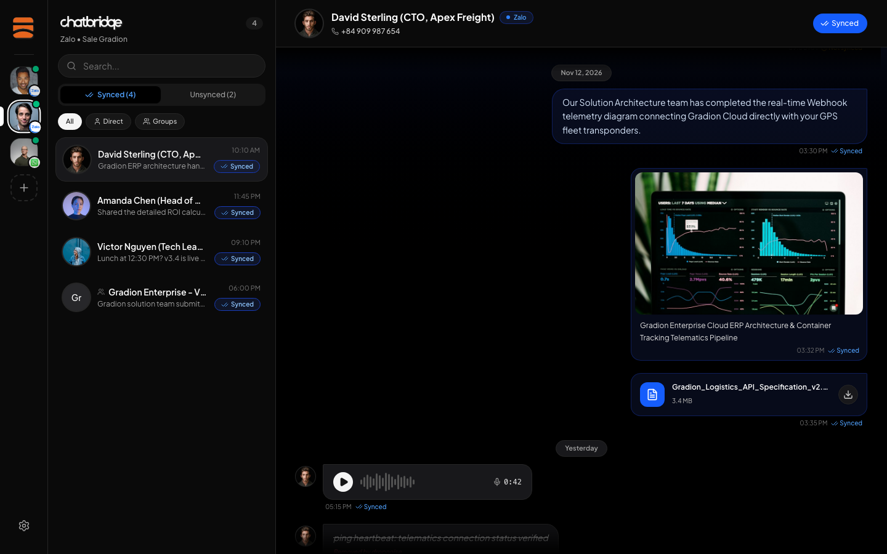
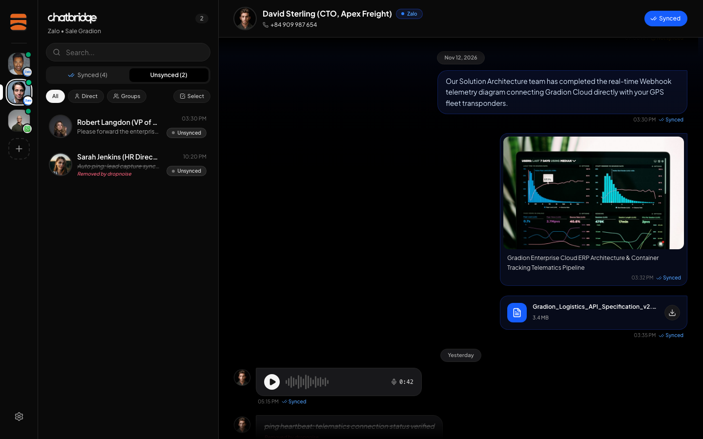
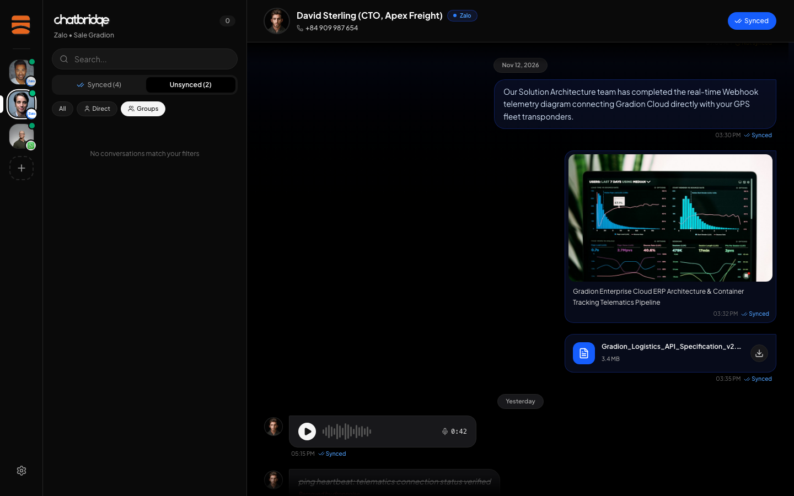
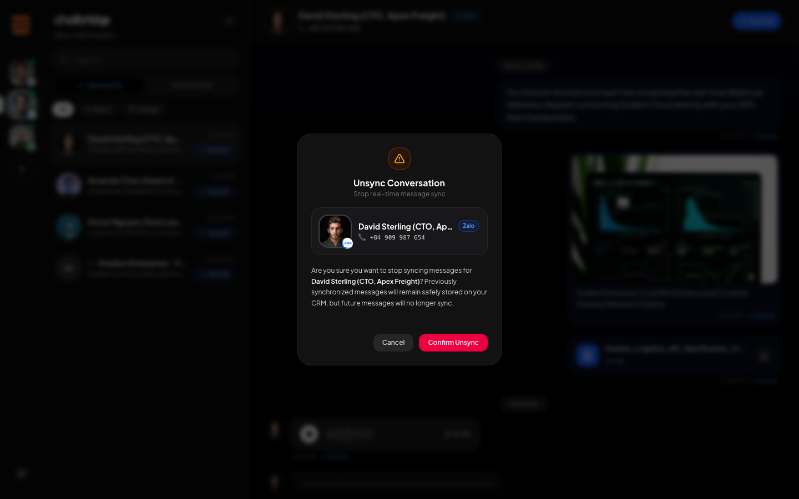
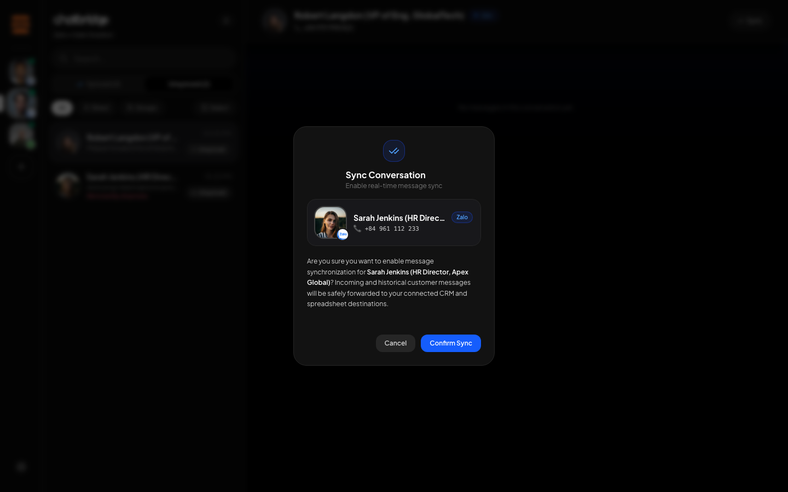
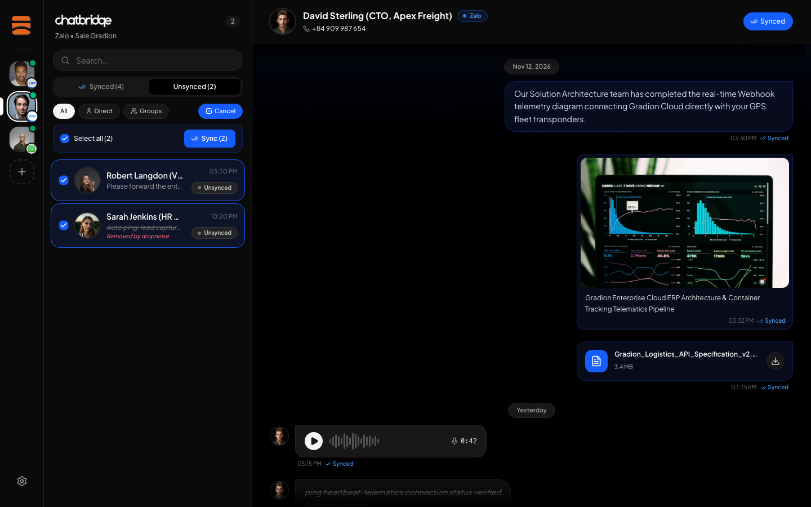
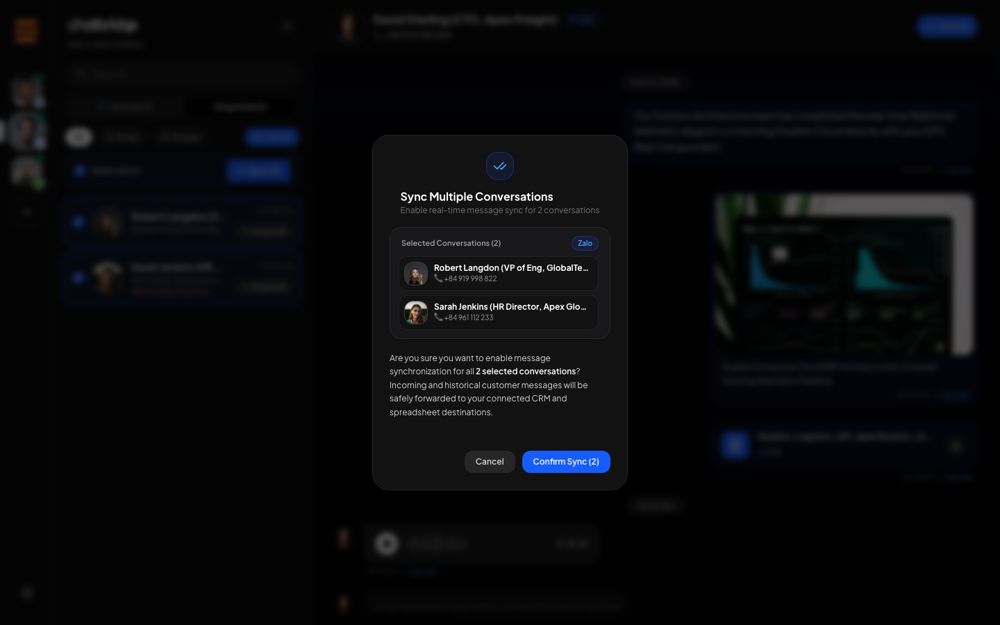

Prototype, sample data · Home page: chats, messages and Sync · screens: home, home-unsynced, home-groups-empty, home-unsync-dialog, home-sync-dialog, home-select, home-sync-many-dialog
Home, Synced tab (theirs)

Unsynced tab (theirs)

Groups filter with no chat (theirs)

Unsync one chat (theirs)

Sync one chat (theirs)

Select several chats (theirs)

Sync several chats (theirs)
